Sikhism
Who are 10 Sikh Gurus
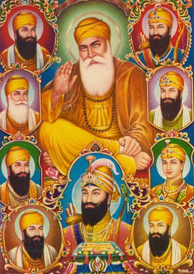Sikhism was established by ten Gurus, divine spiritual messengers or masters, over the period from 1469 to 1708 - that is, over a period of 239 years. These teachers were enlightened souls whose main purpose in life was the spiritual and moral well-being of the masses. By setting an exceptional example of how to live a holy and worthy life through practising righteous principles of living their human lives, they sort to awaken the higher conciousness in the human race. The Gurus taught the people of India and beyond, to live spiritually fulfilling lives with dignity, freedom and honour.
Each of the ten masters added to and reinforced the message taught by the previous, resulting eventually to the creation of the religion that is now called Sikhism. Guru Nanak Dev Ji was the first Guru and Guru Gobind Singh Ji the final Guru in human form. When Guru Gobind Singh Ji left this world, he decreed the holy scripture Sri Guru Granth Sahib as the eternal Guru henceforth. Thus, the Guru Granth Sahib, in spirit, is more than a holy book for the Sikhs, for the Sikhs accord the Guru Granth Sahib the same respect and reverence as they did to the human form Gurus.
During the span of 239 years, the Sikh Gurus laid down within the sacred scriptures, the principles that outline the way of living that was to be followed by all practicing disciples of this religion. The history and the literature present the followers of the faith and others with the raw material required to learn about the beliefs and practices propagated by the Gurus. The Gurus were clear also to outline rituals, practices and beliefs that were not appropriate and were not to be followed by the faithful disciples. They promoted the habit of reciting the holy hymns called Shabads; living in constant remembrance of the Supreme Creator and living a simple life of truth, decency and virtuous principles.
- 1. Guru Nanak Dev Ji - Guru from 1469 to 1539 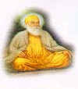
- 2. Guru Angad Dev Ji - Guru from 1539 to 1552 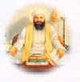
- 3. Guru Amar Das Sahib Ji - Guru from 1552 to 1574 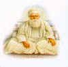
- 4. Guru Ram Das Sahib Ji - Guru from 1574 to 1581 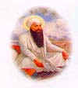
- 5. Guru Arjan Dev Ji - Guru from 1581 to 1606 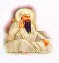
- 6. Guru Har Gobind Sahib Ji - Guru from 1606 to 1644 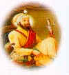
- 7. Guru Har Rai Sahib Ji - Guru from 1644 to 1661 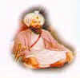
- 8. Guru Har Krishan Sahib Ji - Guru from 1661 to 1664 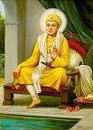
- 9. Guru Tegh Bahadur Sahib Ji - Guru from 1665 to 1675 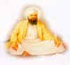
- 10. Guru Gobind Singh Sahib Ji - Guru from 1675 to 1708 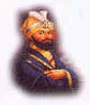
- 11. Guru Granth Sahib Ji - Guru from 1708 to eternity 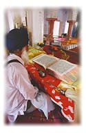
The first of the Gurus and the founder of the Sikh religion was Guru Nanak. He was born at Talwandi (now known as Nankana Sahib in Pakistan) on October 20, 1469. Guru ji mastered Punjabi, Sanskrit and Persian at an early age and in childhood revolted against ritualism, caste, prejudices, hypocrisy and idolatry. He regarded Hindus and Muslims as equals and referred to himself as neither Hindu nor Muslim but as a brother to all those who believed in God and truth. He made four great journeys, travelling to all parts of India, and into Arabia and Persia; visiting Mecca and Baghdad. He spoke before Hindus, Jains, Buddhists, Parsees, and Muslims. He spoke in the temples and mosques, and at various pilgrimage sites. Wherever he went, Guru Nanak spoke out against empty religious rituals, pilgrimages, the caste system, the sacrifice of widows, of depending on books to learn the true religion, and of all the other tenets that were to define his teachings. Never did he ask his listeners to follow him. He asked the Muslims to be true Muslims and the Hindus to be true Hindus.
He was born in 1504. Guru Angad invented and introduced the Gurmukhi (written form of Punjabi) script and made it known to all Sikhs. The scripture of the Guru Granth Sahib Ji is written in Gurmukhi. This scripture is also the basis of the Punjabi language. It became the script of the masses very soon. Guru Angad was a model of self-less service to his Sikhs and showed them the way to devotional prayers. He took great interest in the education of the children by opening many schools for their instruction and thus greatly increased literacy. For the youth he started the tradition of Mall Akhara, where physical as well as spiritual exercises were held. He collected the facts about Guru Nanak Sahib's life from Bhai Bala ji and wrote the first biography of Guru Nanak Sahib. (The Bhai Bale Wali Janamsakhi currently available is not the same as that which Guru Angad Sahib compiled.) He also wrote 63 Saloks (stanzas), these were included in Guru Granth Sahib. He popularized and expanded the institution of 'Guru ka Langar' started by Guru Nanak Sahib earlier.
He was born in 1479. Guru Amardas took up cudgels of spirituality to fight against caste restrictions, caste prejudices and the curse of untouchability. He strengthened the tradition of the free kitchen, Guru Ka Langar (started by Guru Nanak), and made his disciples, whether rich or poor, whether high born or low born (according to the Hindu caste system), have their meals together sitting in one place. He thus established social equality amongst the people. Guru Amardas introduced the Anand Karaj marriage ceremony for the Sikhs, replacing the Hindu form. He also completely abolished amongst the Sikhs, the custom of Sati, in which a married woman was forced to burn herself to death in the funeral pyre of her husband. The custom of Paradah (Purda), in which a woman was required to cover her face with a veil, was also done away with.
He was born in 1534. Guru ji founded the city of Amritsar and started the construction of the famous Golden Temple at Amritsar, the holy city of the Sikhs. He requested the, Muslim Sufi, Mian Mir to lay the cornerstone of the Harmandir Sahib. The temple remains open on all sides and at all times to everyone. This indicates that the Sikhs believe in One God who has no partiality for any particular place, direction or time. The standard Sikh marriage ceremony known as the Anand Karaj is centered around the Lawan, a four stanza hymn composed by Guru Ram Das ji. The marriage couple circumscribe the Guru Granth Sahib ji as each stanza is read. The first round is the Divine consent for commencing the householders life through marriage. The second round states that the union of the couple has been brought about by God. In the third round the couple is described as the most fortunate as they have sung the praises of the Lord in the company of saints. In the fourth round the feeling of the couple that they have obtained their hearts desire and are being congratulated is described.
He was born in 1563. He was the third son of Guru Ram Das ji. Guru Arjan was a saint and scholar of the highest quality and repute. He compiled the Adi Granth, the scriptures of the Sikhs, and wrote the Sukhmani Sahib. To make it a universal teaching, Guru ji included in it hymns of Muslim saints as well those of low-caste pariah saints who were never permitted to enter various temples. Guru Arjan Dev completed construction of Sri Darbar Sahib also known as Golden Temple in Amritsar. Sri Darbar Sahib welcomes all without discrimination, which is symbolised by the four doors that are open in four directions. Guru ji became the first great martyr in Sikh history when Emperor Jahangir ordered his execution.
He was born in 1595. He was the son of Guru Arjan Dev and was known as a "soldier saint," Guru Hargobind ji organised a small army, explaining that extreme non-violence and pacifism would only encourage evil and so the principles of Miri-Piri were established. Guru ji taught that it was necessary to take up the sword in order to protect the weak and the oppressed. Guru ji was first of the Gurus to take up arms to defend the faith. At that time it was only emperors who were allowed to sit on a raised platform, called a takhat or throne. At the age of 13, Guru Hargobind erected Sri Akal Takhat Sahib, ten feet above the ground and adorned two swords, Miri and Piri, representing temporal and spiritual power.
He was born in 1630, spent most of his life in devotional meditation and preaching the teachings of Guru Nanak. Although, Guru Har Rai Ji was a man of peace, he never disbanded the armed Sikh Warriors (Saint Soldiers), who earlier were maintained by his grandfather, Guru Hargobind. He always boosted the military spirit of the Sikhs, but he never himself indulged in any direct political and armed controversy with the Mughal Empire. Guru ji cautiously avoided conflict with Emperor Aurangzeb and devoted his efforts to missionary work. He also continued the grand task of nation building initiated by Guru Hargobind.
He was born in 1656. Guru Har Krishan was the youngest of the Gurus. Installed as Guru at the age of five, Guru ji astonished the Brahmin Pundits with his knowledge and spiritual powers. To the Sikhs he proved to be the very symbol of service, purity and truth. The Guru gave his life while serving and healing the epidemic-stricken people in Delhi. The young Guru began to attend the sufferers irrespective of cast and creed. Particularly, the local Muslim population was much impressed with the purely humanitarian deeds of the Guru Sahib and nicknamed him Bala Pir (child prophet). Even Aurangzeb did not try to disturb Guru Harkrishan Sahib sensing the sensitivity of the situation, but on the other hand never dismissed the claim of Ram Rai also. Anyone who invokes Guru Har Krishan with a pure heart has no difficulties whatsoever in their life.
He was born in 1621 in Amritsar. He established the town of Anandpur. The Guru laid down his life for the protection of the Hindu religion, their Tilak (devotional forehead markings) and their sacred (janeau) thread. He was a firm believer in the right of people to the freedom of worship. It was for this cause that he faced martyrdom for the defence of the down-trodden Hindus. So pathetic was the torture of Guru Tegh Bahadur that his body had to be cremated clandestinely (a follower burned down his own home to cremate the Guru's body) at Delhi while his severed head was secretly taken four hundred kilometers away to Anandpur Sahib for cremation. Because of his refusal to convert to Islam a threatened forced conversion of the Hindus of Kashmir was thwarted.
He was born in 1666 and became Guru after the martyrdom of his father Guru Tegh Bahadur. He created the Khalsa (The Pure Ones) in 1699, changing the Sikhs into a saint-soldier order with special symbols and sacraments for protecting themselves. After the Guru had administered Amrit to his Five Beloved Ones, he stood up in supplication and with folded hands, begged them to baptize him in the same way as he had baptized them. He himself became their disciple (Wonderful is Guru Gobind Singh, himself the Master and himself the disciple). The Five Beloved Ones were astonished at such a proposal, and represented their own unworthiness, and the greatness of the Guru, whom they deemed God's representative upon earth. He gave the Sikhs the name Singh (lion) or Kaur (princess). He fought many battles against the armies of Aurangzeb and his allies. After he had lost his father, his mother and four sons to Mughal tyranny, he wrote his famous letter (the zafarnama) to Aurangzeb, in which he indicted the Grand mughal with his treachery and godliness, after which the attacks against the Guru and his Sikhs were called off. Aurangzeb died soon after reading the letter. Soon, the rightful heir to the Mughal throne sought the Guru's assistance in winning his kingdom. It was the envie and fear of the growing friendship between the new Emperor and the Guru which lead to the sneak attack of the Pathan assasins of Wasir Khan who inflicted the wound which later caused the Guru's death. Thus the tree whose seed was planted by Guru Nanak, came to fruition when Guru Gobind Singh created the Khalsa, and on 3 October 1708, appointed Guru Granth Sahib as the Guru. He commanded: "Let all bow before my successor, Guru Granth. The Word is the Guru now."
Guru Granth Sahib (also known as the Adi Granth) is the scripture of the Sikhs. No Sikh ceremony is regarded as complete unless it is performed in the presence of Guru Granth Sahib. The Granth was written in Gurmukhi script and it contains the actual words and verses as uttered by the Sikh Gurus. It is considered the Supreme Spiritual Authority and Head of the Sikh religion, rather than any living person. It is also the only scripture of its kind which not only contains the works of its own religious founders but also the writings of people of other faiths. The living Guru of the Sikhs, the book is held in great reverence by Sikhs and treated with the utmost respect. Guru Granth Sahib is a book of Revelation. It conveys the Word of the Master through His messengers on earth. It is universal in its scope. The greatness of the Guru Granth Sahib lies not only in its being the Holy Scripture of the Sikhs but also in it being a general scripture available to mankind, intended for everybody, everywhere.